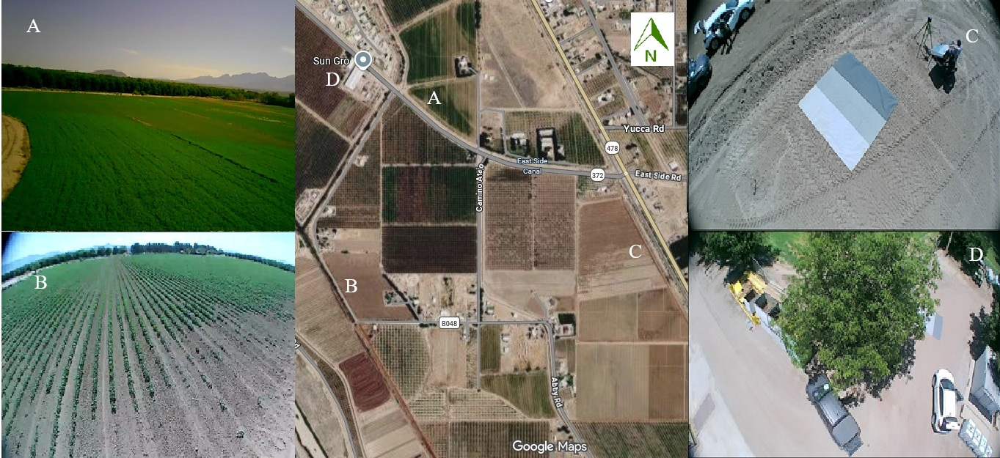

Agricultural Remote Sensing Study Site
The Mesilla Park study area provides an agricultural setting for integrating satellite observations, UAV imagery, and field measurements. The site supports hands-on remote sensing education and the evaluation of techniques for monitoring vegetation, crop conditions, and spatial variability.
Study Sites
Four field locations within the study area were selected for multi-scale remote-sensing observations using satellite, aerial, UAV, and ground-based sensors.

Four field locations within the Mesilla Park study area were selected to support the collection and comparison of remote-sensing observations at different spatial resolutions; satellital, aerial, and ground-based scales. Using several locations allows us to examine how vegetation, soil, and surface characteristics vary spatially and temporally and how these variations look like from different sensing platforms.
These field sites provide locations for collecting ground-reference data that can be compared with remotely sensed observations. During field campaigns, measurements and imagery were acquired using ground sensors and UAVs and subsequently compared with aerial and satellite data, including NAIP (TBD) and Sentinel-2 imagery. This multi-scale approach provides students and researchers with an opportunity to study remote-sensing concepts such as multi -spatial, -spectral and -temporal data comparisons.